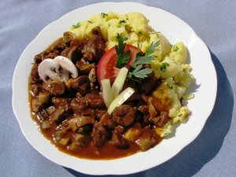

|
|
|
Wildgerichte
- vadas ételek
|
|
|
|
|
|
Hirschfilet mariniert / Szarvasszelet
vadász módra |
|
|
Zutaten: 1
kg Hirschfilet für 10 Portionen, 1/2 kg entsteintes Sauerkirschkompott, 200 ml
Portugieser Rotwein, 100 ml Süße Sahne/Schlagobers, 100 g
Butter, 1 TL Kristallzucker, Salz, Pfefferpulver, Pastetengewürz*,
Mehl.
|
Zubereitung:
Die
dickgeschnittenen Medaillons mit Pastetengewürz und Pfefferpulver
einreiben, in Mehl wenden, in heißer Butter schnell rosa braten,
salzen und abgedeckt warm stellen.
Sauerkirschenfond-Zubereitung: Den Bratenrückstand mit
dem Rotwein ablöschen, Süße Sahne einrühren, zu sämiger Konsistenz
einköcheln und passieren.
Den Zucker
mit wenig Butter hellbraun karamellisieren, die Sauerkirschen mit
wenig Saft dazugeben und so lange über Feuer schwenken, bis diese
sich glasiert haben. Die Sauerkirschen aus der Sauce nehmen, von
den Medaillons umgeben in die Mitte der Platte platzieren, mit dem
eingedickten Sauerkirschfond überglänzen.
|
Serviervorschlag:
Reichen Sie zu diesem köstlichen Wildgericht die Sauce à part und
Topfen-Serviettenknödel.
Passender Wein: dunkelroter Portugieser aus dem
oder aus dem
,
evtl. Merlot oder Weißwein der Sorten Traminer oder Lindenblatt.
|
| *Pastetengewürz" besteht
im Allgemeinen aus: 15 Teile
weißer Pfeffer, 5 Teile Piment, 2 Teile Muskatblüte und je ein
Teil Gewürznelke, Lorbeer, Majoran, Muskatnuss, Rosmarin, Salbei
und Zimt. Alle Zutaten werden fein gemahlen und vermischt. |
| |
| |
|
Reh- oder Lammrücken /
Bárány- vagy Őzgerinc |
|
|
Zutaten: 1
Rehrücken (ca. 2,5 kg), 1/2 TL Salz, 10 g Thymian, 10 g
Rosmarin, 10 g Majoran, 5 g frisch gemahlener schwarzer Pfeffer, 5 g
frisch gemahlener Koriander, 10 frisch gemahlene Wacholderbeeren, 5
Knoblauchzehen, 1/2 l süßer Rotwein. 1 kg
Apfelrotkraut, viel Backobst, möglichst Birnen, Quitten,
Pflaumen und auch Aprikosen.
|
Zubereitung:
Backofen auf 200°C vorheizen. Rehrücken von Haut und
Sehnen befreien, mit der Gewürzmischung bestreichen. Im
offenen, eingefetteten und vorgeheizten Römertopf im Backofen
10 Minuten lang von allen Seiten anrösten, dabei 2-3 mal
wenden. Apfelrotkraut um das Fleisch herum verteilen und Backobst
reichlich am Fleisch verteilen, Fleisch und Kraut mit dem Rotwein
begießen, Topf mit dem im Wasser getränkten
Römertopfdeckel bedecken und ca. 30 Minuten lang backen.
|
Serviervorschlag: Mit
Salzkartoffeln, Kartoffelcroquetten oder Mehlteignockerln anrichten.
Fast alle dunklen Saucen sind geeignet, vor allem Hagebutten-, rote
Johannisbeer- und Himbeersaucen sind empfehlenswert (bloß
keine
Preiselbeeren!). Vor
dem Essen trinkt man gerne Sekt oder einen roten Sauvignonwein.
Passender Wein: Cabernet Franc,
Lindenblatt, Zweigelt. |
| |
| |
|
Wildschwein-Schmorbraten / Vaddisznó sült |
|
|
Zutaten: 1
kg Keule mit Schwarte, 30 g Salz, 1 Bund Suppengrün aus
Mohrrüben,
Petersilienwurzel, Sellerie. 1 lila Zwiebel, 3 Knoblauchzehen, 5
Pfefferkörner, 5
Wacholderbeeren, 1 g Thymian, 1 Lorbeerblatt, 0,5 l Rotwein, 100 g
Meerrettich,
1 Zitrone, 250 g Hagebuttenmarmelade. 1,5 kg festkochende Kartoffeln.
|
Zubereitung:
Die
vorbereitete Keule wie Rollschinken zubinden, sodass die Schwarte
außen
ist.
Die
dickeren Teile des geschälten und gewaschenen
Suppengrüns à la Julienne
in feine Streifen schneiden und in das Fleischtopf geben. Das restliche
Suppengrün mit wenig Wasser in einem zweiten Topf aufsetzen.
Salz, Zwiebel,
Knoblauch Pfefferkörner, Wacholderbeeren zugeben und
aufkochen. Das Fleisch
zugeben, Rotwein draufgießen und zugedeckt etwa 3 Stunden
lang schmoren, dabei
öfter wenden und nur soviel Wasser nachgießen, dass
das Fleisch bedeckt
bleibt. Das Fleisch soll gerade gekocht, jedoch nicht zerkocht werden.
Das
Fleisch herausnehmen, Bindfaden entfernen.
Während
das Fleisch schmort, das feingeschnittene
Suppengrün im Salzwasser gar kochen.
|
Serviervorschlag:
Das Fleisch in 1 cm dicke Scheiben schneiden und halb
übereinander auf eine
Servierplatte legen, mit der Rotweinsauce
übergießen. Zitrone in dünne
Scheiben schneiden und mit dem Petersiliengrün auf das Fleisch
legen.
Hagebuttenmarmelade und geriebenen Meerrettich in getrennten
Schälchen
auftischen. Dazu Salzkartoffel servieren.
Passender Wein: Portugieser, Kadarka,
Blaufränkisch, Cabernet Franc, Cabernet
Sauvignon, evtl. Riesling. |
| |
| |
|
Reh- oder
Hirschgulasch /
Szarvaspörkölt |
|
|
|
 |
Zutaten: 1
kg Reh- oder Hirschkeule (ohne Knochen), 1 Batzen Fett, 2 rote Zwiebeln oder
Schalotten, 9
Knoblauchzehen, 5 Wacholderbeeren, Paprikapulver 10 g edelsüß und 5 g
rosenscharf, 1 Priese
gemahlener Kümmel, Salz, 1 große Mohrrübe,
1/4 Sellerieknolle, 1 gelbspitze
Paprikaschote, 1 EL Tomatenmark, 1/2 Flasche roter Sauvignonwein, 1 kg
Erdäpfel.
Vorbereitung: Die
Haut und Sehnen vom Wildbret entfernen, das Fleisch grob
würfeln, waschen
und ins Eiswasser legen.
Das
Gemüse waschen. Die Paprikaschote in Streifen, die Erdäpfel in Spalten
schneiden.
|
| |
Zubereitung: Im
Fleischtopf die feingehackten Zwiebeln im Fett glasig werden lassen,
mit
Paprikapulver und Knoblauch vermischen, das Fleisch darin
anrösten. Salz,
Kümmel, Tomatenmark zugeben, das Fleisch 10 Minuten lang
anbraten, dabei oft
umrühren.
Zerdrückte Wacholderbeeren, Gemüse, Rotwein, etwas Wasser zugeben
und zugedeckt dünsten. Ist
das Fleisch gar, kann man die Erdäpfel und die in Streifen
geschnittene
Paprikaschote dazugeben und weiterkochen, bis die Erdäpfel gar
sind.
|
Serviervorschlag: Kartoffel
zerdrückt, evtl. püriert servieren. Blattsalat oder auch Blaukraut
als Beilage.
Hausgemachter Schnaps vor dem Essen und Bier für danach
bereithalten.
Passender Wein: Cabernet Franc, Cabernet
Sauvignon, evtl. Riesling.
|
| |
|
Hasengulasch /
Nyúlpörkölt |
|
|
Zutaten: 6
Hasenkeulen, 100 g Räucherspeck, 100 g Fett, 2 lila Zwiebeln, 6
Knoblauchzehen,
Paprikapulver 10 g edelsüß und 5 g rosenscharf, 1 TL
Salz, 1 TL Tomatenmark, 2 gelbspitze Paprikaschoten, 0,5 l roter
Sauvignonwein.
|
Zubereitung: Die
Keulen von Haut und Sehne befreien, an den Gelenken zertrennen, waschen
und
mit dem Räucherspeck spicken. In der Fettpfanne die gehackten
Zwiebeln glasig
werden lassen, die Keulen darin anrösten und mit dem
Paprikapulver bestreuen,
öfter wenden, anbraten, die Pfanne mit dem Rotwein
füllen. Knoblauch, Salz,
Tomatenmark dazugeben und das Fleisch zugedeckt dünsten,
öfter wenden.
Wenn
das Fleisch gar ist, die Paprikastreifen in der Pfanne kurz
weichkochen und
abschmecken.
|
Serviervorschlag:
Salzkartoffel als Beilage.
Passender Wein:
Kadarka, Blaufränkisch, Cabernet Franc, Cabernet
Sauvignon oder Weißwein der Sorte Lindenblatt. Nach dem Essen ist
ein Spätburgunder
gerade ideal. |
|
|
|
|
|
Gefüllter Fasan à la
Graf Széchenyi / Széchenyi Fácán |
|
|
|
|
Zutaten:
3 Fasane, 200 g Räucherspeck, 20 g Salz, 1 g Majoran, 100 g
Butter, 200 g
Gänseleber, 200 g Pfifferlinge, 300 g Reis, 1 g gemahlener
weißer Pfeffer, 1
Bund Petersiliengrün, 1 Zwiebel, 1 EL Tomatenmark, 20 g Mehl,
2 Eier.
Vorbereitung: Die
Fasanen ausnehmen, von innen und außen gründlich
waschen, das Innere
leicht salzen. Räucherspeck in dünne Streifen
schneiden und damit die
Bruststücke und Keulen spicken. |
Füllung: 1.
Reis in einer Keramikpfanne mit
der doppelter Menge Wasser auffüllen, Salzen und die
Hälfte der Butter darauf
verteilen - in der Bratröhre fertig garen. 2.
In einem Topf die restlichen
Butter zergehen lassen, die feingehackte Zwiebel darin glasig
werden
lassen, in Würfel geschnittene Gänseleber und die
kleingehackten Pfifferlinge
dazugeben. Würzen mit Salz, Pfeffer, Majoran und
frischgewiegter Petersilie.
Die rohen Eier in den gebackenen Reis mischen, die gebratene Leber und
Pfifferlinge beimengen. Die Fasanen damit füllen und zubinden.
|
Fasan backen:
Die gefüllten Fasanen leicht salzen, in einer eingefetteten
Bratpfanne in der
Backröhre knusprig braten - dabei öfter
begießen, am besten mit einem süßen
Rotwein, wie Spätburgunder.
|
Sauce: Das
Fett aus der Bratpfanne mit dem Tomatenmark und Mehl zur
Bratensauce verrühren - bloß kein Mondamin!
|
Serviervorschlag: die
Keulen auf einen Servierteller legen und die Füllung darauf
ausbreiten. Die schräg geschnittene
Brustteile darauf legen. Mit der Bratensauce begießen. In
Butter gedünstete
Apfelscheiben drauflegen. Kopfsalat als Beilage.
Passender Wein:
Portugieser, Traminer oder Lindenblatt.
|
| |
| |
| |
| |
Ungarn-Tourist Team

|
| |
 |
| |
|


 Sie
wollen endlich mal ein Gulasch nach
Originalrezept in Budapest genießen. Dann nichts wie hin.
Sie
wollen endlich mal ein Gulasch nach
Originalrezept in Budapest genießen. Dann nichts wie hin.